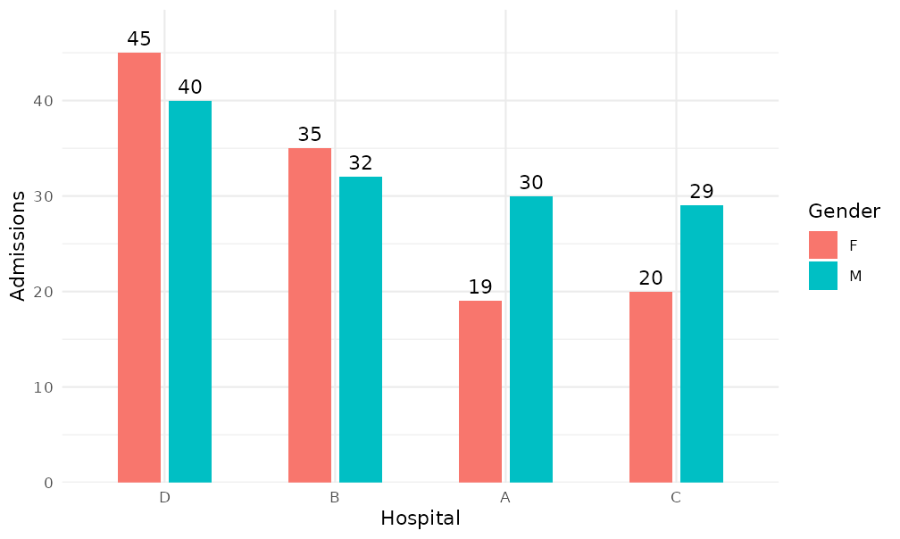
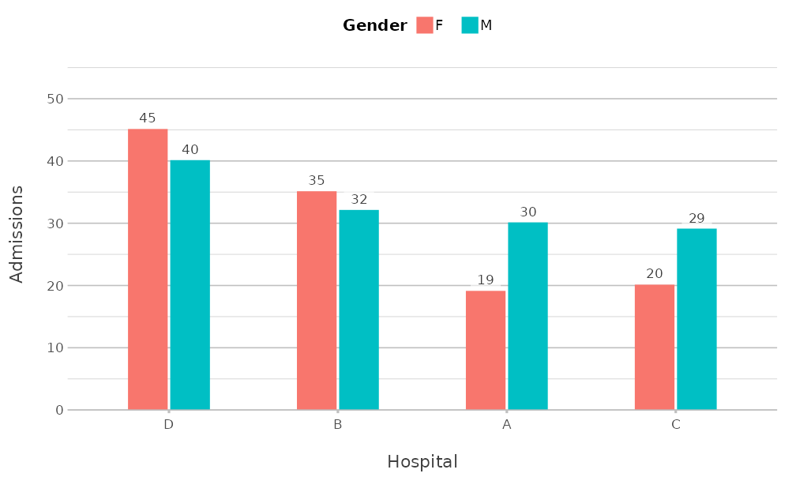
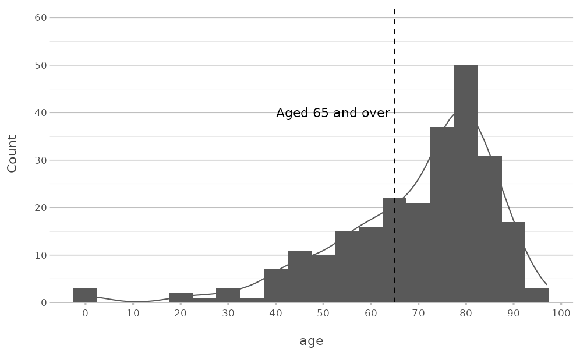
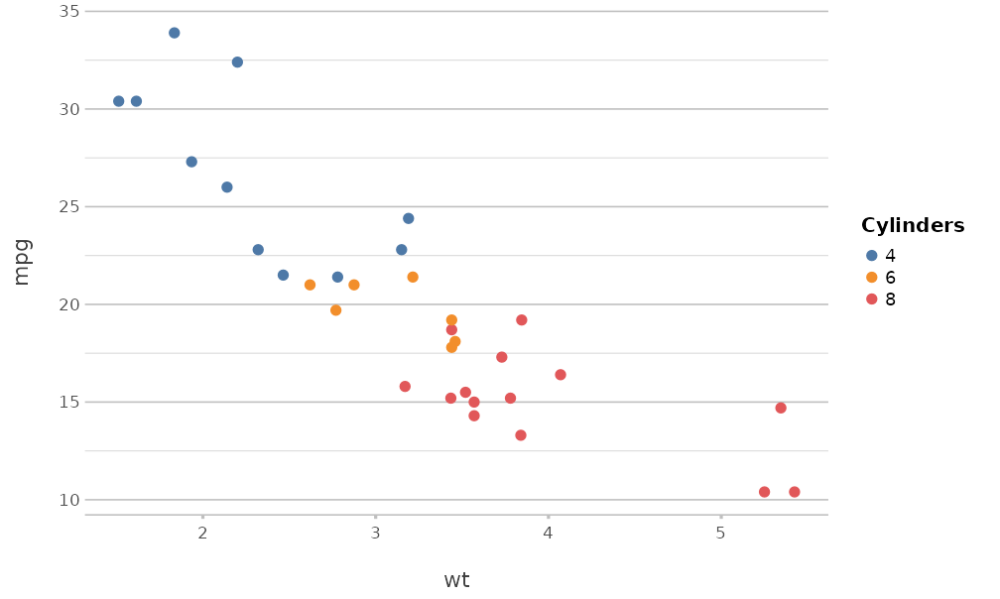

plot2 for ggplot2 users
Source:vignettes/articles/plot2-for-ggplot2-users.Rmd
plot2-for-ggplot2-users.RmdThis article is for users who know ggplot2. It describes
how the concepts of plot2() relate to those of
ggplot2, and what plot2() does by default.
Concepts
ggplot2 builds a plot from components: data, aesthetic
mappings, geoms, statistics, scales, coordinates, facets and a theme.
plot2() builds the same components, but its arguments
describe the plot instead of the components:
plot2() |
ggplot2 |
|---|---|
x, y
|
aes(x = , y = ) |
category |
aes(colour = ) or
aes(fill = ), depending on the geom; or another aesthetic
set with category.type
|
facet |
facet_wrap() |
type |
geom_*(), together with the position, such
as position_dodge()
|
calculations in x, y,
category and facet
|
group_by() and summarise() or
mutate() before the plot |
x.sort, category.sort,
facet.sort
|
forcats::fct_reorder(),
fct_infreq() or fct_relevel() before the
plot |
x.max_items,
category.max_items
|
forcats::fct_lump_n() before the plot |
colour, colour_fill
|
scale_colour_*() and
scale_fill_*()
|
x.* and y.* settings |
scale_x_*() and
scale_y_*()
|
datalabels |
geom_text() or geom_label()
with the summarised values |
title, x.title,
category.title, … |
labs() |
theme |
theme_*() and theme()
|
An example
This plot shows the number of admissions per hospital and gender,
sorted by the total number of admissions, with data labels. In
ggplot2, the data are summarised and sorted first:
admitted_patients |>
count(hospital, gender) |>
mutate(hospital = reorder(hospital, -n, FUN = sum)) |>
ggplot(aes(x = hospital, y = n, fill = gender)) +
geom_col(position = position_dodge(width = 0.6), width = 0.5) +
geom_text(aes(label = n), position = position_dodge(width = 0.6), vjust = -0.5) +
scale_y_continuous(expand = expansion(mult = c(0, 0.1))) +
labs(x = "Hospital", y = "Admissions", fill = "Gender") +
theme_minimal()
In plot2(), the same steps are arguments:
admitted_patients |>
plot2(x = hospital,
y = n(),
category = gender,
x.sort = "freq-desc",
x.title = "Hospital",
y.title = "Admissions",
category.title = "Gender")
#> Applying x.sort = "freq-desc" using summarise_function = sum
The results differ in style, because each package has its own
defaults; the next section lists those of plot2().
Defaults of plot2()
plot2() sets these defaults, each of which can be
changed with the argument concerned:
- The theme is
theme_minimal2()(argumenttheme;theme = NULLuses the default theme ofggplot2). - The y axis starts at zero where possible and has extra room at the
top (
y.zoom,y.limitsandy.expand). - Column plots have data labels when there are at most 25 columns
(
datalabels). - The legend is at the top, or at the right for a numeric
category(legend.position). - Text and factor values of
xare sorted alphabetically, with numbers in their numeric order (x.sort). - Whole numbers that look like years or months become text in discrete
plot types (
x.characterandcategory.character). - Large and small numbers on the y axis are formatted with a thousands
separator or in scientific notation (
y.scientific,big.markanddecimal.mark). - Axis titles are taken from the given columns or calculations
(
x.title,y.title,category.title).
The section Automatic choices in ?plot2 lists
all rules, and in an interactive session plot2() reports
each decision in a message.
Continuing with ggplot2
plot2() returns a ggplot object, so every
ggplot2 function can be added to it:
admitted_patients |>
plot2(x = age, type = "histogram", binwidth = 5) +
geom_vline(xintercept = 65, linetype = "dashed") +
annotate("text", x = 64, y = 40, label = "Aged 65 and over", hjust = 1) +
scale_x_continuous(breaks = seq(0, 100, 10))
#> Assuming smooth = TRUE for type = "histogram"
#> Scale for x is already present.
#> Adding another scale for x, which will replace the existing scale.
A scale that plot2() already set is replaced, with a
message from ggplot2. Use the x.* and
y.* arguments of plot2() to avoid this.
The package also has functions to change a plot afterwards:
-
add_type()adds any geom with the data of the plot, andadd_line(),add_point(),add_col(),add_errorbar(),add_smooth()andadd_sf()add the most common ones; -
add_mapping()adds or changes an aesthetic mapping; -
move_layer()changes the order of the layers; -
get_plot_title()returns the title of a plot, for example to use it as a file name.
Using parts of plot2 with ggplot2
Several functions of plot2 also work in plots made with
ggplot2 alone:
-
theme_minimal2(), the theme; -
coord_spider(), the coordinate system of spider plots; -
get_colour(), which returns colours from palettes and registered colours, for example forscale_fill_manual(values = get_colour("viridis", 4)); -
md_to_expression(), which converts markdown to aplotmathexpression for titles and labels; - the labelling functions
euros(),dollars()andlabel_taxonomy(), for scales and data labels.
ggplot(mtcars, aes(x = wt, y = mpg, colour = factor(cyl))) +
geom_point(size = 2) +
scale_colour_manual(values = get_colour("Tableau 10", 3)) +
labs(colour = "Cylinders") +
theme_minimal2()